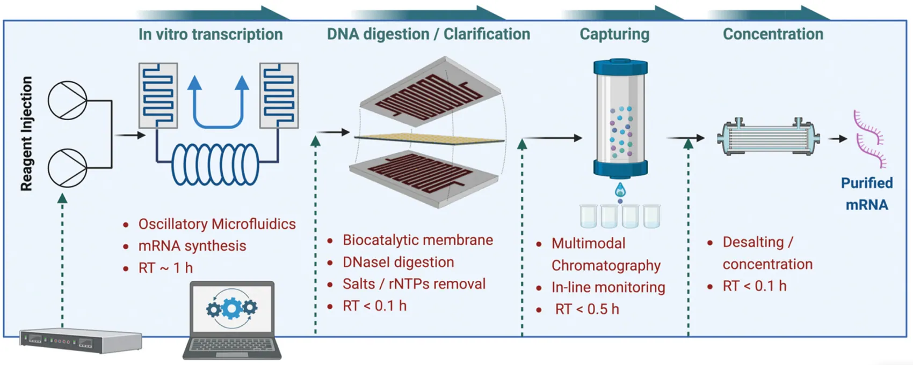
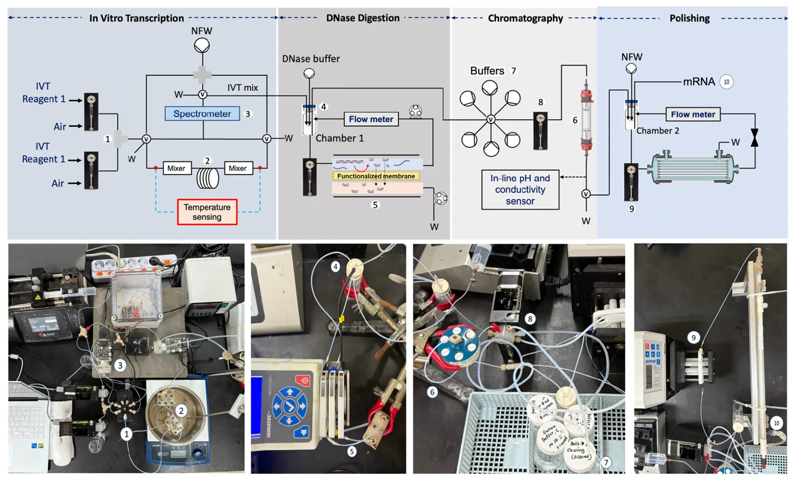
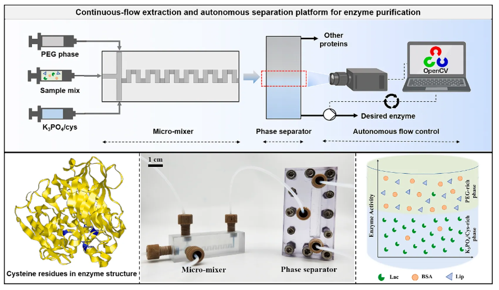
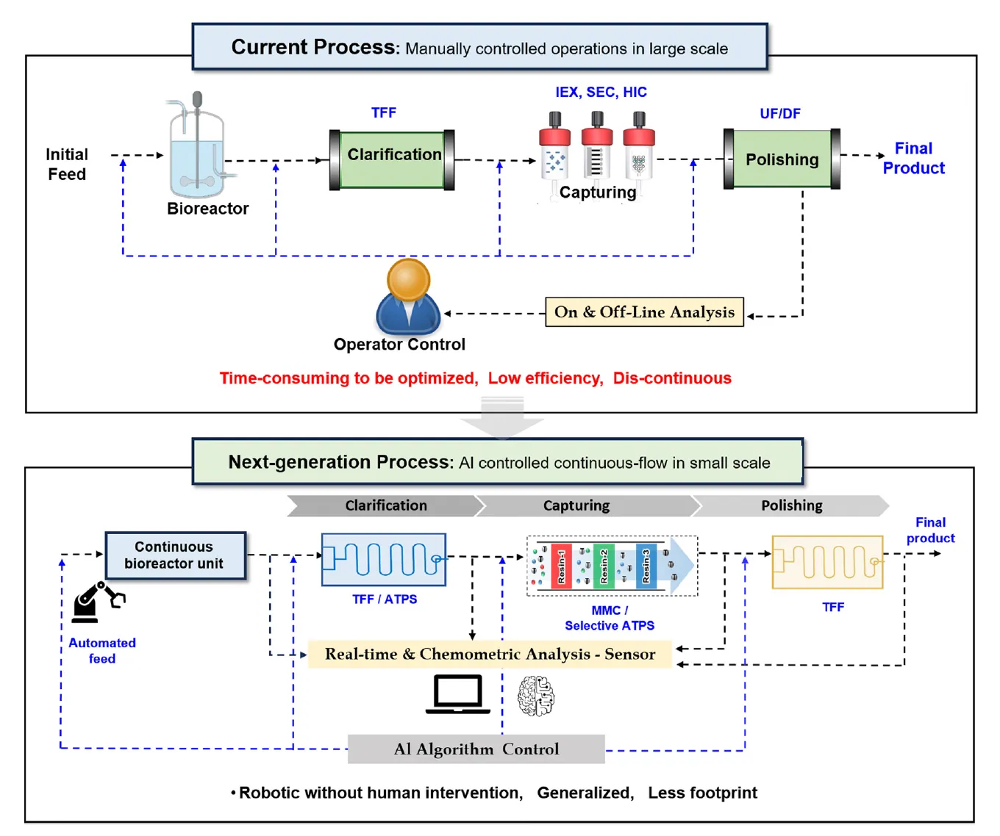

2026 · Lab on a Chip
An automated modular microfluidic platform for end-to-end mRNA synthesis and purification
Integrated microfluidic synthesis, enzymatic processing, purification and concentration of mRNA.
Read publication / DOI ↗Featured contributions from the Principal Investigator’s academic research record.

Integrated microfluidic synthesis, enzymatic processing, purification and concentration of mRNA.
Read publication / DOI ↗
Experimental oscillatory-flow microreactor engineering and intensified mRNA synthesis.
Read publication / DOI ↗
Microfluidic downstream separation and image-informed feedback control.
Read publication / DOI ↗
Perspective on modular continuous purification, automation and process intensification.
Read publication / DOI ↗Explore the complete and updated publication record, author order, citations and additional research outputs through the academic profiles below.
WO2025071355A1 · Microfluidic reaction device and mRNA synthesis method. Published international patent application; grant status not asserted.